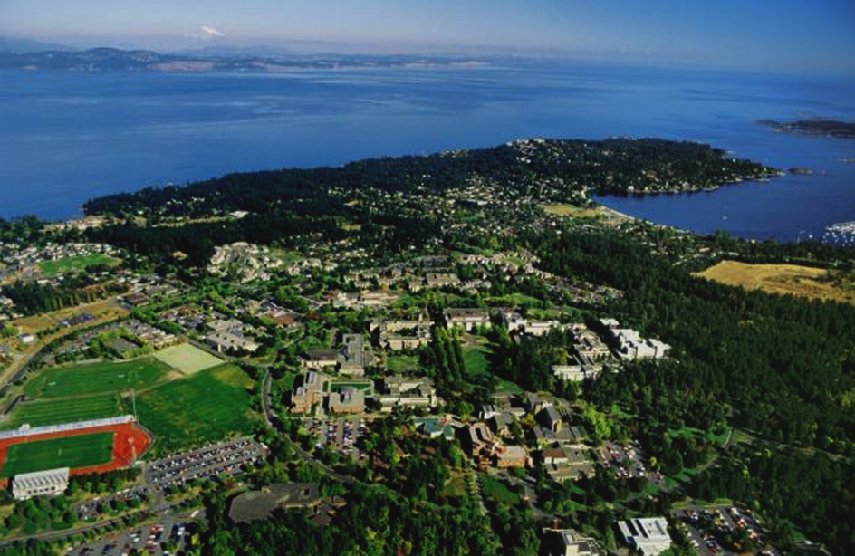
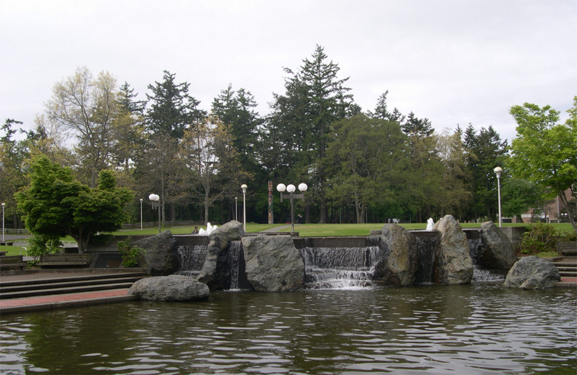
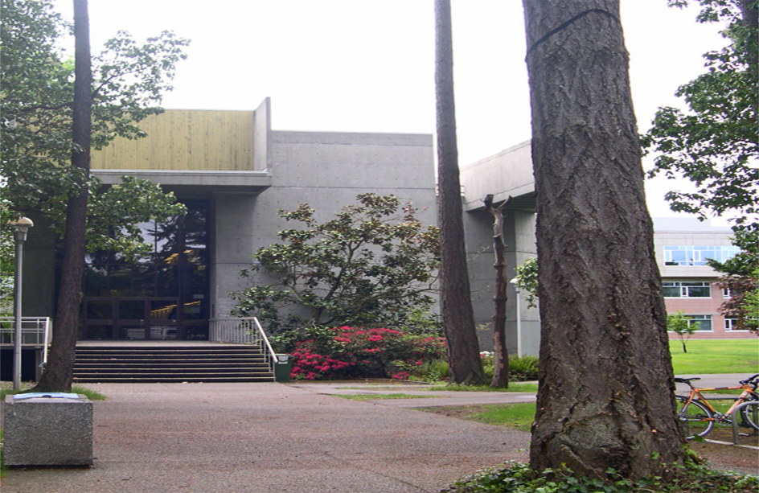

Become a lab member
We have openings for bright enthusiastic people to join our lab as graduate students at the MSc or PhD level in the Graduate Program in Neuroscience at UVic.
Please contact Raad Nashmi (raad@uvic.ca) and email your university transcripts and CV.
Life at UVic
The University of Victoria is a mid-size school of about 20,000 located on Vancouver Island in the city of Victoria, the capital of British Columbia. Greater Victoria region has a population of 330,000 and has all the amenities common to major Canadian cities. Victoria boasts breathtaking natural scenery and a mild climate, making it one of the most desirable places to live in Canada.
Mail:
University of Victoria
Department of Biology
Petch Building 168
3800 Finnerty Road
Victoria, BC V8P 5C2
Canada
Phone: (250) 721-6169
Fax: (250) 721-7120
Raad currently teaches the following classes:
BIOL 365 - Animal Physiology
BIOL 460 - Honours Seminar
BIOL 477 - Ion Channles and Disease
BIOL 500 - Fundamentals of Neuroscience
BIOL 509D - Ion Channels: Structure and Function
Raad's office is located in the Cunningham building, room #259b.
